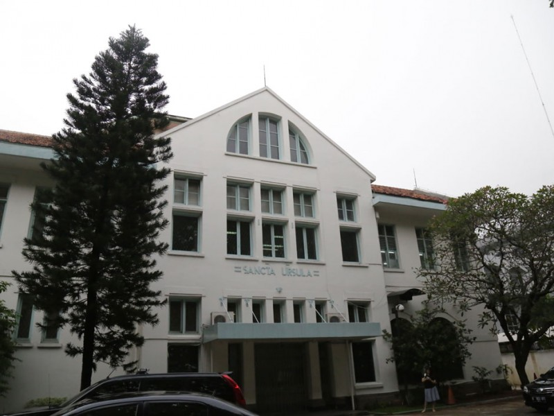
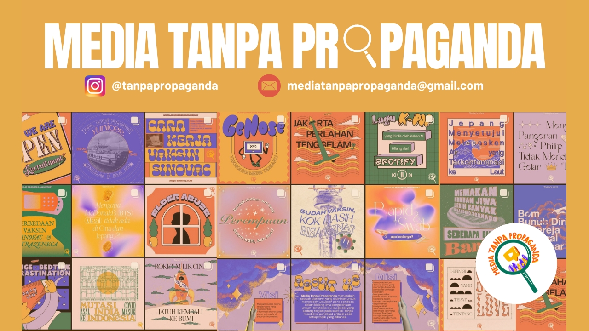
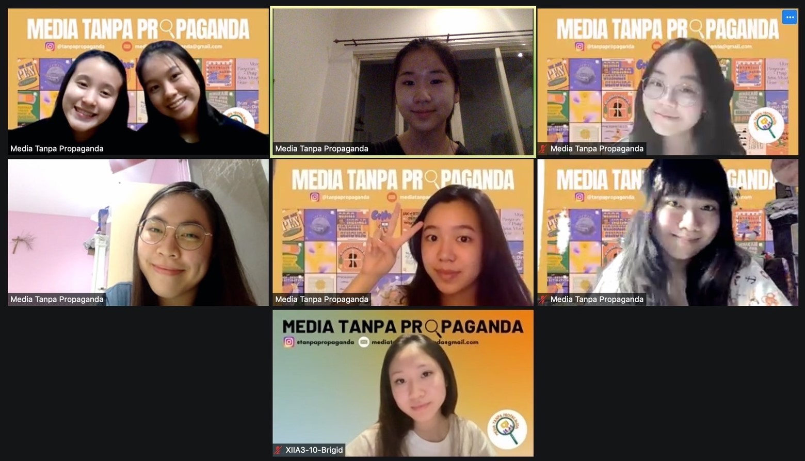
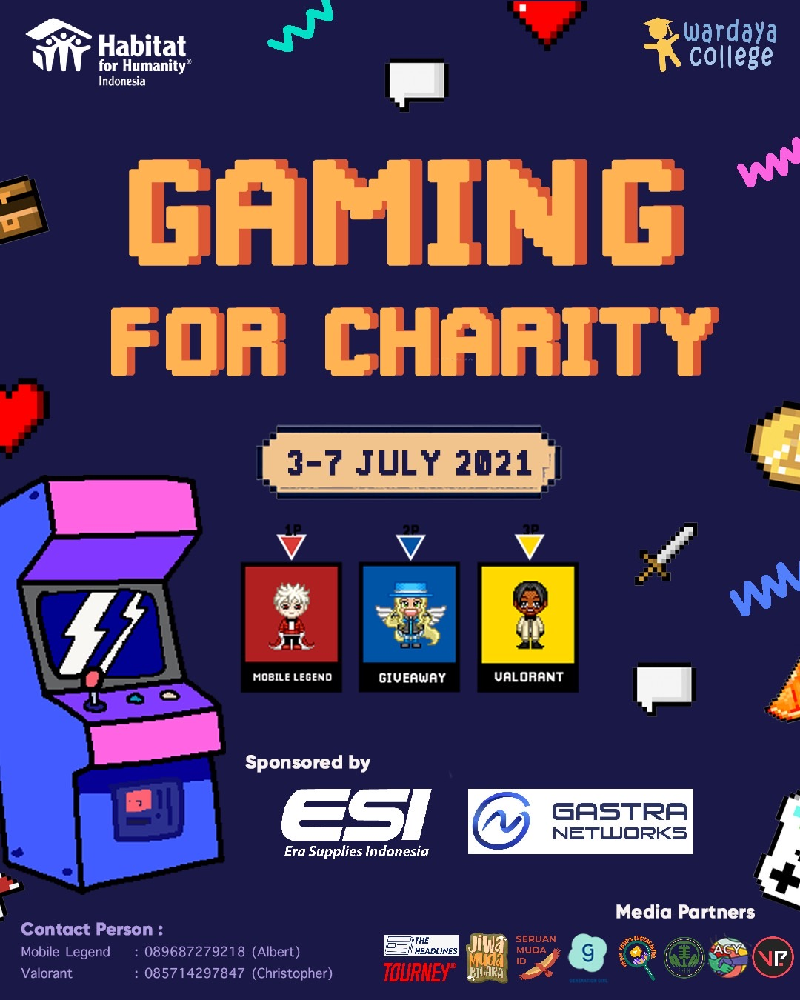
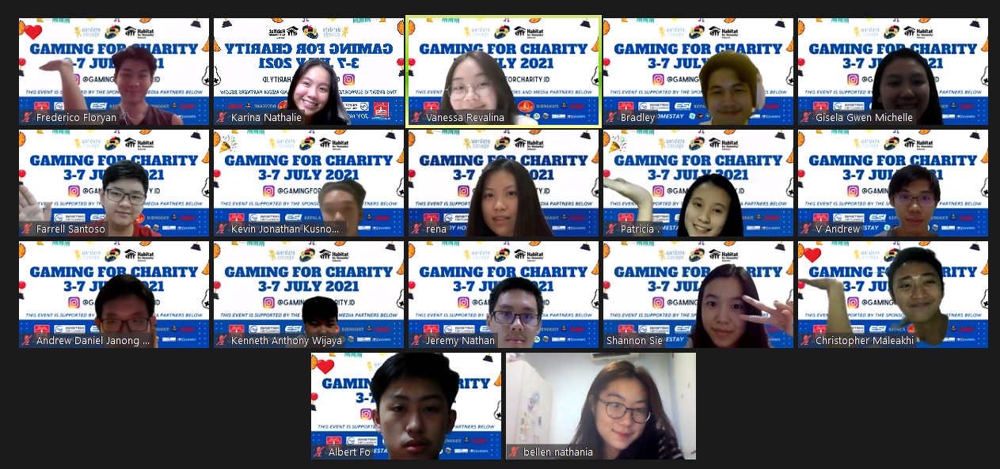
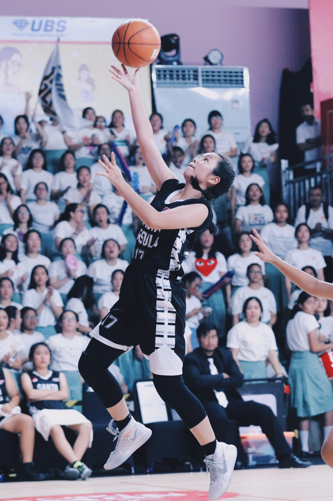
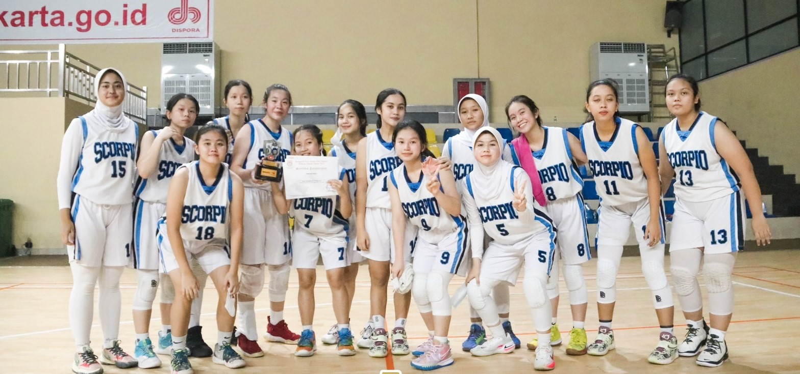

Education
I am currently studying in SMA Santa Ursula Jakarta, which is located in Jalan Pos 2, Pasar Baru, Jakarta Pusat and majoring in Natural Sciences. Since I am a final year student, I am expected to be graduated in May 2022. During my high school, I also participated in several prominents competitions and extracurricular, such as Basketball, Cinematography, Girl’s Scout, Deutsch Club.
During my high school years, I devoted my time to representing Santa Ursula Jakarta in several prominent academic events and competitions. Having achieved The Most Outstanding Student Award in junior high school and academically ranked 4th in senior high school for two consecutive semesters, I was selected to participate in the Indonesia National Science Olympiad as school representative of the Physics team. Technological education has also awakened my natural curiosity, and I was involved in a coding competition recently as a consequence.
Project and Events
Leadership Experience
Seeking to continue and start my career in computing-related jobs, I have been trying to improve my relevant soft-skills. Apart from communication abilities, critical thinking skills and problem-solving are compulsory rather than preferable these days. Without these new sets of skills, people could be struggling as thousands of jobs may be eliminated due to the existence of Artificial Intelligence.
Responding to that idea, I initiated and configured an online media platform named Media Tanpa Propaganda, also known as Media Without Propaganda, which aims to widen general knowledge, especially current global issues, without bringing personal opinions on every topic discussed. By delivering news in a bilingual manner regularly, we have reached more than 3700 accounts on Instagram. Moreover, more than 75 Indonesian teenagers applied to be volunteers in our organization as we had opened recruitment last July. By participating as a content writer, I received the opportunity to reinforce my ability to examine different problems without prejudice.
Social Experience
Providing consistently viral content that has been happening around the world has enabled me to increase my concern for social issues, including Nusa Tenggara Timur’s disaster that had just happened at the beginning of 2021. It did not need a long time for me to act and give a helping hand. My interest in games had given me the idea to plan an online game competition in July 2021 to collect funds and spread awareness about this catastrophic disaster.
I immediately engaged in a volunteer project collaboration of two prominent companies in Indonesia, Habitat for Humanity and Wardaya College, as a leader in an independent event, Gaming for Charity: Resurrect the Imperfect. After approximately 6 months of work, we felt grateful that we could amass more than 215 people and 30 teams and raise more than IDR 23,6 Million (USD 1653) for Nusa Tenggara Timur’s disaster relief.
Sport
In terms of non-academic skills, sport describes me the most. Having been playing in basketball clubs since fourth grade, I was selected to be one of the starters of my school’s basketball team. Indeed, winning several basketball competitions together is one of the best experiences that I have ever had. One of those was when I participated in Development Basketball League (DBL) , which is the biggest student basketball competition in Indonesia. Having the crowd cheering me up and singing my school hymns on a spacious basketball court is what is still haunting me even up to this day.
From 2018 until this day, I joined the Scorpio Jakarta Basketball Club and took part in several competitions, including The Regional Basketball Championship of East Jakarta (PERBASI). This year, we fortunately got second place in the match, which permits us to continue our journey in the province state.